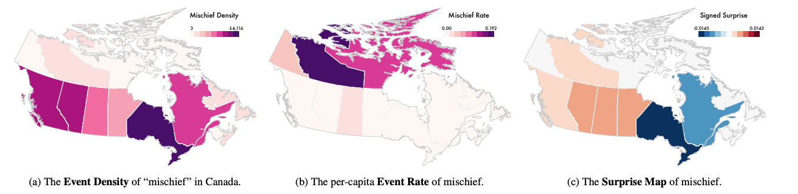
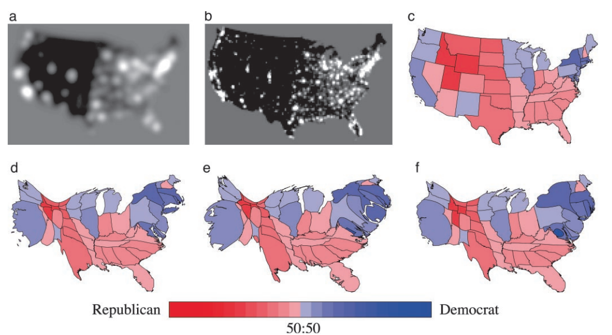

Trees and Geo
MIDS W209: Information Visualization
John Alexis Guerra Gómez | john.guerra[at]gmail.com | @duto_guerra
Andy Reagan | andy[at]andyreagan.com | @andyreagan
https://johnguerra.co/lectures/MIDS_W209_Information_Visualization/09_Trees_and_Geo/
Andy Reagan | andy[at]andyreagan.com | @andyreagan
https://johnguerra.co/lectures/MIDS_W209_Information_Visualization/09_Trees_and_Geo/

Partially based on slides from Tamara Munzner
What We Are Going to Learn
- How to visualize Trees
- Node-Link representations
- Containment representations
- Tree comparison
- How to visualize spatial
- Geo
- Spatial
Trees
Tree Definition
- Set of nodes and links that express the parent-to-child relationship, where each node:
- Is uniquely labeled in the tree
- Contains one or more numeric variables with values over time
- Contains one or more categorical attributes that may have more than one value
Types of Trees

How Trees Are Stored
- JSON file
- GraphML file
- Table
- Multiple attributes define hierarchy (e.g. state, city, neighborhood)
- One attribute defines hierarchy with a separator (e.g. California/San Francisco/Presidio)
- One attribute defines parent ID
Treemap from Table
Treemap from tableConvert tables to trees
Trees: Node-link
Idiom: Radial Node-Link Tree
- Data:
- Tree
- Encoding:
- Link connection marks
- Point node marks
- Radial axis orientation
- Angular proximity: siblings
- Distance from center: depth in tree
- Task:
- Understanding topology, following paths
- Scalability:
- 1,000 to 10,000 nodes
Cluster Dendograms Radial
- Data: trees
- Tasks: summarize common connections
- Considerations:
- Harder to read
- Better space usage

Phylogenetic Trees
- Data: tree of life
- Tasks: summarize common connections; identify clusters
- Considerations:
- Harder to read
- Also works with other clusters' data

Cluster Dendograms Cartesian
Force-Directed Tree
Collapsible Tree
- Data: tree/network
- Tasks: navigate connections; locate nodes
- Considerations:
- Great for larger datasets
Spacetree
Spacetree (cont.)
Degree of Interest Tree
Trees: Containment
Idiom: Treemap
- Data:
- Tree
- One quantitative attribute at leaf nodes
- Encoding:
- Area containment marks for hierarchical structure
- Rectilinear orientation
- Area encodes quantitative attribute
- Tasks:
- Query attribute at leaf nodes
- Scalability:
- One million leaf nodes
Link Marks: Connection and Containment
- Marks as links (vs. nodes):
- Common case in network drawing
- 1D case: connection
- Example: all node-link diagrams
- Emphasizes topology, path tracing
- Networks and trees
- 2D case: containment
- Example: all treemap variants
- Emphasizes attribute values at leaves (size coding)
- Only trees
Icicle Tree
- Data: tree
- Tasks: summarize values/hierarchy; navigate links
- Considerations:
- Uses more space than the treemap
- Better for labels

Icicle Tree (cont.)
- Data: tree
- Tasks: summarize values/hierarchy; navigate links; compare values in leaves
- Considerations:
- Careful with small edges

Sunburst Tree
- Data: tree
- Tasks: summarize values/hierarchy; navigate links
- Considerations:
- Radial values are confusing
- Fancy yet difficult animation

Radial Treemap
Kickstarter Projects
Tree Drawing Idioms Comparison
- Data shown:
- Link relationships
- Tree depth
- Sibling order
- Design choices:
- Connection vs. containment link marks
- Rectilinear vs. radial layout
- Spatial position channels
- Considerations:
- Redundant? Arbitrary?
- Information density?
- Avoid wasting space
Tree Comparison
TreeVersity v2
Visualizing Spatial Data
Geo
Idiom: Choropleth Map
- Use given spatial data:
- When central task is understanding spatial relationships
- Data:
- Geographic geometry
- Table with one quantitative attribute per region
- Encoding:
- Use given geometry for area mark boundaries
- Sequential segmented colormap
- Essentially, geographic heat map
Choropleth Map
- Familiar
- Areas encode... state area
Bivariate Choropleth Map
Idiom: Dot Map
- Good for population density
- Might require opengl
- Task summarize
Idiom: Bubble Map
- Alternative for choropleth
- Be careful with occlusion
U.S. Grid Map
Population Maps Trickiness
- Beware!
- Absolute vs. relative again
- Population density vs. per capita
- Investigate with Ben Jones Tableau Public demo
- Are maps of financial variables just population maps?
- Yes, unless you look at per capita (relative) numbers
Idiom: Bayesian Surprise Maps
- Use models of expectations to highlight surprising values
- Confounds (population) and variance (sparsity)
Bayesian Surprise Map
Idiom: Topographic Map
- Data:
- Geographic geometry
- Scalar spatial field:
- One quantitative attribute per grid cell
- Derived data:
- Isoline geometry
- Isocontours computed for specific levels of scalar values
Idiom: Cartogram
- Data:
- Geographic geometry
- Continuous value at each geometry
- Derived data:
- New geographic geometry: many algorithm choices
- Then encoded as choropleth
Cartogram 1
Cartogram 2
Spatial Data
Idioms: Isosurfaces, Direct Volume Rendering
- Data:
- Scalar spatial field
- One quantitative attribute per grid cell
- Task:
- Shape understanding, spatial relationships
- Isosurface:
- Derived data: isocontours computed for specific levels of scalar values
- Direct volume rendering:
- Transfer function maps scalar values to color, opacity
- No derived geometry
Isosurfaces Example

Vector and Tensor Fields
- Data:
- Many attributes per cell
- Idiom families:
- Flow glyphs:
- Purely local
- Geometric flow:
- Derived data from tracing particle trajectories
- Sparse set of seed points
- Texture flow:
- Derived data, dense seeds
- Feature flow:
- Global computation to detect features
- Encoded with one of methods above
Vector Fields
- Empirical study tasks:
- Finding critical points, identifying their types
- Identifying what type of critical point is at a specific location
- Predicting where a particle starting at a specified point will end up (advection)
Vector Field Example

Name That Dynamical System

Idiom: Similarity-Clustered Streamlines
- Data:
- 3D vector field
- Derived data (from field):
- Streamlines: trajectory particle will follow
- Derived data (per streamline):
- Curvature, torsion, tortuosity
- Signature: complex weighted combination
- Compute cluster hierarchy across all signatures
- Encode: color and opacity by cluster
- Task:
- Find features, query shape
- Scalability:
- Millions of samples, hundreds of streamlines
Streamlines

Map Libraries
Mapbox and Tableau
Maps in TableauMapbox + Tableau examples
Votos Fajardo
votosFajardo2
Votos Concejo
votosConcejo
Mapbox and d3
Mapbox d3Maps with d3
Map Projections
http://blockbuilder.org/mbostock/3711652Map Projections
Mike's Maps Tutorial
Command-Line Cartography, Part 1Vega-Lite Maps
Vega-Lite APIWhat We Learned
- How to visualize Trees
- Node-Link representations
- Containment representations
- Tree comparison
- How to visualize spatial
- Geo
- Spatial